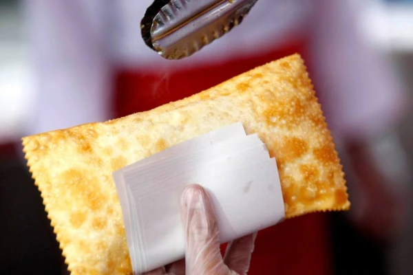

Pastel: o queridinho dos brasileiros!
Pastel
Ingredientes:
1 - 3 xícaras de farinha de trigo;
2 - 1 xícara de água morna (ou um pouco mais);
3 - 3 colheres (sopa) de óleo (de soja, milho, girassol ou algodão);
4 - 1 colher (sopa) de aguardente;
5 - 1 colher (sopa) rasa de sal;
6 - farinha de trigo para trabalhar a massa.
Modo de preparo
1 - Coloque a farinha misturada com o sal em uma vasilha ou uma mesa e abra um buraco no meio;
2 - Nesse buraco, coloque o óleo, a aguardente e um pouco de água;
3 - Misture a água e a farinha aos poucos, cada vez pegando um pouco mais de farinha da borda do buraco;
4 - Quando a massa estiver ficando dura, coloque mais água;
5 - A massa deve ficar macia;
6 - Se estiver um pouco grudenta, não tem problema;
7 - Se estiver muito grudenta, coloque mais farinha;
8 - Se estiver dura, coloque mais água;
9 - Em uma superfície enfarinhada, abra a massa com o auxílio de um rolo, de forma que ela fique bem fina;
10 - Se não ficar fina, ela não fica crocante depois de fritar;
11 - Recheie a gosto, e feche com um garfo ou com o verso de uma faca;
12 - Frite em óleo quente (não muito) em fogo médio-alto e escorra com o auxílio de uma escumadeira, antes de deixar para secar em papel absorvente.